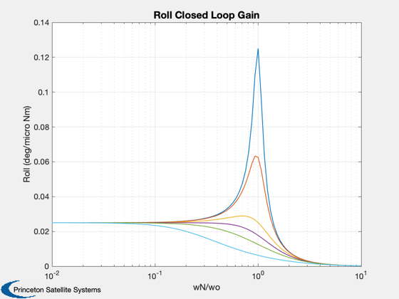
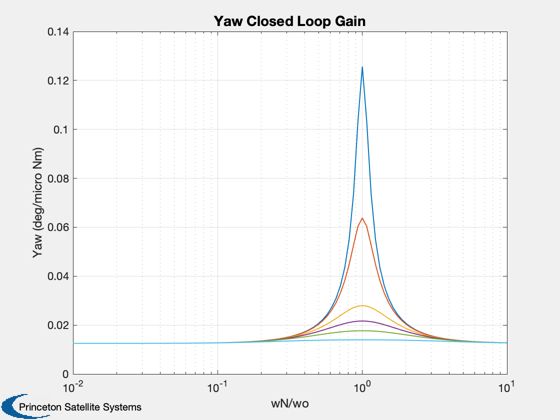
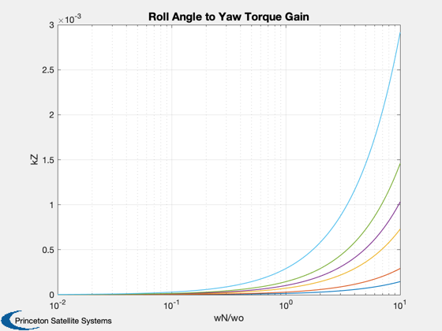
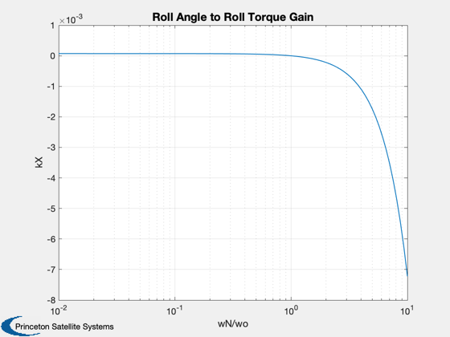
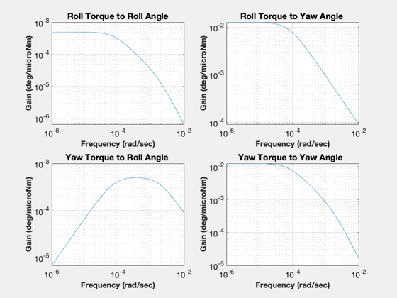
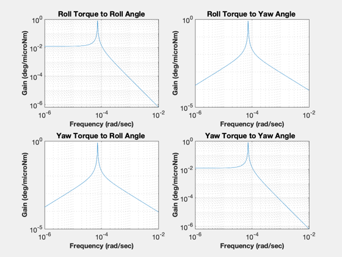
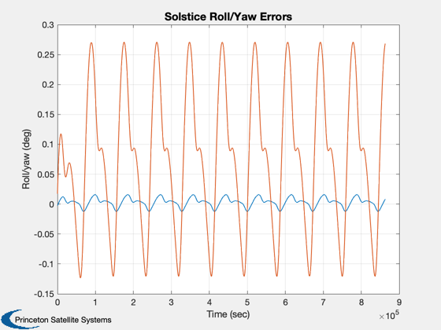
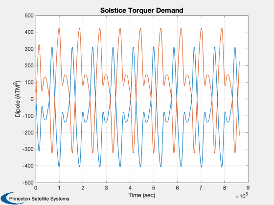
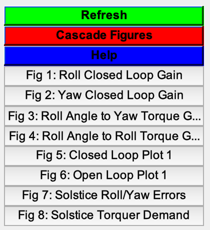

Design and test the low frequency roll/yaw control system.
The script has three parts:
1. Investigate the orbit rate disturbance attenuation assuming that the orbit rate disturbance is caused by an inertially fixed torque. 2. Select gains and look at the torque transmission plots. The first set are closed loop. The second set are open loop (for reference purposes.) 3. Simulate the response to the orbit rate disturbance. 4. Must run ComStarDist.m first (saves/updates DistModel.mat).
Saves the control matrices in RYC.mat. ------------------------------------------------------------------------ See also Geo, ComStar, ComStarDist, RYDyn, SCHarm, SCSeries, C2DZOH, MagPlot, TTPlots, Plot2D ------------------------------------------------------------------------------
Contents
%------------------------------------------------------------------------------- % Copyright (c) 1996 Princeton Satellite Systems, Inc. % All rights reserved. %------------------------------------------------------------------------------- % Since version 2. %-------------------------------------------------------------------------------
Constants
%---------- degToRad = pi/180; radToDeg = 180/pi; wo = Geo; hW = ComStar('MWA Inertia')*ComStar('Nominal MWA Rate'); iAxis = [1 3]; inr = ComStar('MO Inertia'); hMWA = ComStar('U MWA')*hW; wO = ComStar('Orbit Rate Unit Vector')*wo; bMin = 75e-9; fprintf(1,'Inertia = %8.1f %8.1f %8.1f kg-m^2\n',inr(1,:)); fprintf(1,' %8.1f %8.1f %8.1f kg-m^2\n',inr(2,:)); fprintf(1,' %8.1f %8.1f %8.1f kg-m^2\n',inr(3,:)); fprintf(1,'MWA Momentum Vector = %8.1f %8.1f %8.1f Nms\n',hMWA);
Inertia = 1640.1 0.0 -0.0 kg-m^2
0.0 949.3 0.0 kg-m^2
-0.0 0.0 2144.2 kg-m^2
MWA Momentum Vector = 0.0 -62.8 0.0 Nms
Plant models
%------------- [aP,bP,cP,dP,aL,bL,cL,dL] = RYDyn( inr, hMWA, wO, iAxis); n = 100; nZ = 6; zeta = [0.1 0.2 0.5 0.7071 1.0 2.0]; k = logspace(-2,1,n); j = sqrt(-1); wN = k*wo; kX = (wo^2-wN.^2)/wo; f0 = 1.e-6/(wo*hW); kZ = zeros(nZ,n); aX = zeros(nZ,n); aZ = zeros(nZ,n); for i = 1:nZ kZ(i,:) = 2*zeta(i)*wN; f = f0./(j*kZ(i,:) - kX); aX(i,:) = abs( 2*wo.*f ); aZ(i,:) = abs((j*wo + kZ(i,:) - j*(kX-wo)).*f); end Plot2D(k,aX*180/pi,'wN/wo','Roll (deg/micro Nm)','Roll Closed Loop Gain','xlog') Plot2D(k,aZ*180/pi,'wN/wo','Yaw (deg/micro Nm)','Yaw Closed Loop Gain','xlog') Plot2D(k,kZ,'wN/wo','kZ','Roll Angle to Yaw Torque Gain','xlog') Plot2D(k,kX,'wN/wo','kX','Roll Angle to Roll Torque Gain','xlog')   
Skew dipole control system simulation
%-------------------------------------- zeta = 2.5; wN = 5*wo; kRY = [(wo^2-wN^2)/wo;2*zeta*wN]; % These gains attenuate the roll/yaw dc disturbance by 0.5 aCL = aL + bL*kRY*[1 0]*hW; dT = 864; s = eig(aCL); fprintf(1,'Closed loop eigenvalues = %12.4e ± j%12.4e (rad/sec)\n',real(s(1)), imag(s(1))); fprintf(1,'Roll angle to roll torque gain = %12.8f (Nm/deg)\n',kRY(1)*hW*pi/180); fprintf(1,'Roll angle to yaw torque gain = %12.8f (Nm/deg)\n',kRY(2)*hW*pi/180); [a,b] = C2DZOH(aCL,bL,dT);
Closed loop eigenvalues = -1.7469e-03 ± j 0.0000e+00 (rad/sec) Roll angle to roll torque gain = -0.00191921 (Nm/deg) Roll angle to yaw torque gain = 0.00199917 (Nm/deg)
The torque transmission plots
%------------------------------ titlesRY = [ 'Roll Torque to Roll Angle';... 'Roll Torque to Yaw Angle ';... 'Yaw Torque to Roll Angle ';... 'Yaw Torque to Yaw Angle ';... ]; wP = logspace(-6,-2,300); mag = MagPlot(aCL,bL,cL,dL,1:2,1:2,wP); TTPlots(radToDeg*1.e-6*mag,wP,titlesRY,'deg/microNm','Closed Loop') [mag,io] = MagPlot(aL,bL,cL,dL,1:2,1:2,wP); TTPlots(radToDeg*1.e-6*mag,wP,titlesRY,'deg/microNm','Open Loop') load DistModel tHarm = tHarm([1 3],:); x = [0;0]; t = 0; nSim = 1000; xPlot = zeros(length(x),nSim); uPlot = zeros(2,nSim); for k = 1:nSim t = t + dT; [s, c] = SCHarm( wo*t, 6 ); u = tHarm(:,1) + tHarm(:,2:7)*s' + tHarm(:,8:13)*c'; x = a*x + b*u*1.e-6; xPlot(:,k) = x; uPlot(:,k) = kRY*x(1)*hW/bMin; end rYGain = kRY*hW; pData = FindDirectory('ComsatData'); save(fullfile(pData,'RYC'),'rYGain', 'aP', 'bP', 'cP', 'dP' ); Plot2D( (0:(nSim-1))*dT,xPlot*180/pi,'Time (sec)','Roll/yaw (deg)','Solstice Roll/Yaw Errors') Plot2D( (0:(nSim-1))*dT,uPlot,'Time (sec)','Dipole (ATM^2)','Solstice Torquer Demand') Figui maxATM = max(abs(uPlot')); fprintf(1,'Maximum Roll Dipole = %12.8f (ATM^2)\n',maxATM(1)); fprintf(1,'Maximum Yaw Dipole = %12.8f (ATM^2)\n',maxATM(2));
Maximum Roll Dipole = 407.00956466 (ATM^2) Maximum Yaw Dipole = 423.96829652 (ATM^2)    
Harmonic expansion
%------------------- t = (0:(nSim-1))*dT; tHarm = [ SCSeries( t,6,6,wo,xPlot(1,:)*180/pi )';... SCSeries( t,6,6,wo,xPlot(2,:)*180/pi )']; kPrint = [1:4 8:10]; fprintf(1,' Bias Sin(wo) Sin(2*wo) Sin(3*wo) Cos(wo) Cos(2*wo) Cos(3*wo)\n'); fprintf(1,'x %9.4f %9.4f %9.4f %9.4f %9.4f %9.4f %9.4f deg\n', tHarm(1, kPrint) ); fprintf(1,'z %9.4f %9.4f %9.4f %9.4f %9.4f %9.4f %9.4f deg\n\n',tHarm(2, kPrint) ); %--------------------------------------
Bias Sin(wo) Sin(2*wo) Sin(3*wo) Cos(wo) Cos(2*wo) Cos(3*wo) x 0.0031 0.0084 0.0052 0.0001 0.0006 0.0031 -0.0000 deg z 0.0761 0.0910 -0.0216 -0.0017 0.1156 0.0684 0.0003 deg